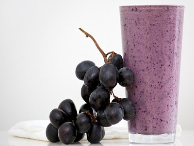

|  |
Smoothie name: Grape smoothie▸ Ingredients:
▸ Time to prepare: 15 minutes ▸ Approx quantity: 1 medium-size cup |
▸ How to make Grape smoothie:
- Grapes are washed, soaked with salt, then cut in half, seeded, peeled, cut into small pieces.
- Next, add grapes, apples, honey, fresh milk, small ice into the blender.
- When the mixture is pureed and smooth, pour it into a glass to drink immediately or you can put it in the refrigerator
to cool down to drink gradually during the day.
▸ Calories and related information: